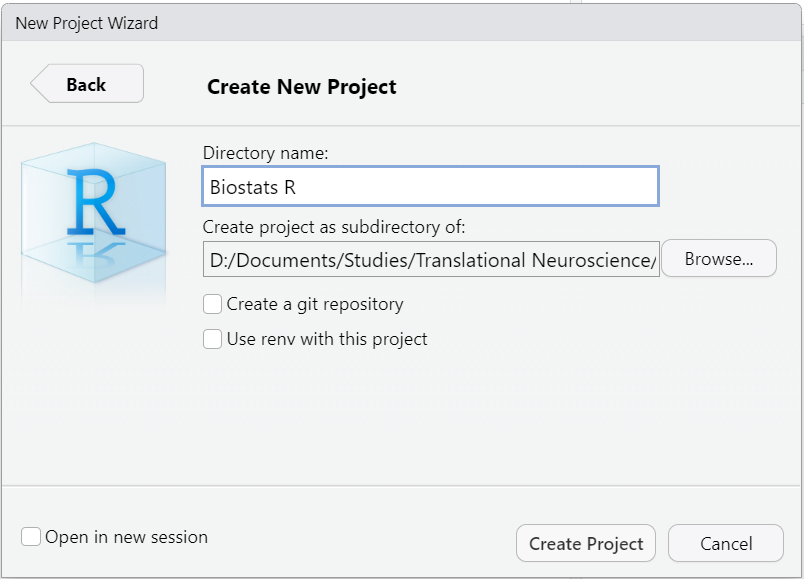
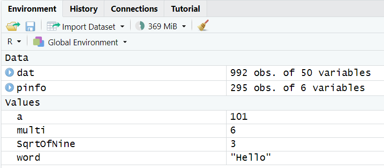

01b Intro to R
Course: “Biostatistics”
Translational Neuroscience
R!
General: Working with R in this course
During Class
- You should have RStudio open and your Biostats project loaded (we will set up the project today).
- Have the slides open in the background. You will need them to copy R code (top right button on any code chunk) or click on links.
Remember: You can navigate through the slides quickly by clicking on the three dashes in the bottom left.
At Home
If possible, use two screens with the slides (Zoom) opened on one and RStudio on the other
Why write code?
Doing statistical calculation by hand? Tedious & error prone! Computer is faster…
Using spreadsheets? Limited options, change data accidentally…
Using point-and-click software (e.g., SPSS)?
proprietary software = expensive
R = open, extensible (community)
reproducible!
Science/Academia is a marathon and not a sprint
⇒ it is worthwhile investing in skills with a slow learning curve that will pay off in the long run
Why write code?

Managing Expectations
- You will learn a new (programming) language. Don’t expect to “speak” it fluently right away.
- During class, it is more important that you can roughly comprehend written code and “translate” it into natural language.
- The second step is to be able to make small adjustments to code that is given to you.
- Only then, the last step is to be able to produce code yourself (with the help of Google, Stackoverflow, templates of this course, etc. :) ).
- But: Use it or loose it! Don’t wait to use
Rin your research projects until you’re “good enough”. It’s more fun to use it on “actual” problems, and makes it much easier to learn.
Install R & RStudio
You should all have installed R & RStudio by now! Who had problems doing so?
Overview RStudio

RStudio Interface
RStudio Panes
Script pane: view, edit, & save your code
Console: here the commands are run and rudimentary output may be provided
Environment: which variables/data are available
Files, plots, help etc.

Using the Console as a Calculator

Console used as calculator
Saving the Results as a Variable/Object
<-is used to assign values to variables (=is also possible, but discouraged inR)a,multietc. are the variable names (some naming rules, e.g., no whitespace, must not start with a number, many special characters not allowed)- You can find those now in your Environment! (top right panel)
- No feedback in the console for saving variables (
2*3outputs6, butmulti <- 2*3doesn’t)
variables can contain basically anything (words, numbers, entire tables of data …)
the variables contain the calculated value (i.e. 101) and not the calculation/formula (100+1)
Working with variables
- You can use those variables for further calculations, e.g.,
a + multi - Note that neither
anormultichange their value.
Working with variables
- Variables can be overwritten (
Rwon’t warn you about this!)
Functions
This code with sqrt(9) looked unfamiliar. sqrt() is an R function that calculates the square root of a number. 9 is the argument that we hand over to the function.
If you want to know what a function does, which arguments it takes, or which output it generates, you can type into the console: ?functionname
This will open the help file in the Help Pane on the lower right of RStudio.
You can also click on a function in the script or console pane and press the F1 key.
Sometimes, the help page can be a bit overwhelming (lots of technical details etc.). It might help you to scroll down to the examples at the bottom to see the function in action!
Functions
Functions often take more than one argument (which have names):
You can explicitly name your arguments (check the help file for the argument names!) or just state the values (but these have to be in the correct order then! See help file).
Packages
There are a number of functions already included with Base R (i.e., R after a new installation), but you can greatly extend the power of R by loading packages (and we will!). Packages can e.g. contain collections of functions someone else wrote, or even data.
You should already have the tidyverse installed (if not, quickly run install.packages("tidyverse") :-) )
But installing is not enough to be able to actually use the functions from that package directly. Usually, you also want to load the package with the library() function. This is the first thing you do at the top of an R script:
(If you don’t load a package, you have to call functions explicitly by packagename::function)
Scripts & Projects
- If you type your code into the console (bottom left), it is not saved. Therefore, it is better practice to write scripts (top left) and save them as files.
- Scripts are basically text files that contain your code and can be run as needed.
- It makes sense to save all your scripts etc. in a folder specifically dedicated to this course.
- We will now create an
Rproject together, which will help you to work with files that belong together.
New Project
- Create a new project by clicking on “File” on the top left and then “New Project…”
- Select “New Directory” (if you already have a folder for this course, you can choose “Existing directory” and select that folder) and then choose “New Project” at the top of the list.
- Choose a project name, e.g., as “Biostats” (this will create a folder in which the project lives)
- Browse where you want to put your project folder (e.g., “D:/Documents/Studies/Translational Neuroscience/”)
PS: R can deal with folder and file names that contain spaces, but since some programms can’t, it’s best practice not to use whitespaces for file/folder naming.
Existing Projects
You will find the current project on the top right corner of RStudio
If you click on the current project, you can open new projects by choosing “Open Project” and select the .Rproj file of the project.
You can also just double click on .Rproj files and RStudio will open with the project loaded.
Existing projects
Why Projects
- Projects are not only convenient for us (e.g., scripts that we had opened before are re-opened when we open the project), they are also great for reproducibility.
- We won’t cover the details here - see the “Further Reading” section of the course page!
Using Scripts
To open a new script, click File \(\to\) New File \(\to\) R Script. (Ctrl + Shift + N)
To run a line of the script, you can either click Run at the top right of the pane or Ctrl + Enter. It will run the code that is highlighted/selected or automatically select the current line (or the complete multi-line command).
To run the whole script/chunk, press Ctrl + Shift + Enter (with full console output) or Ctrl + Shift + S (limited output).
Using scripts
Vectors
- So far, we’ve worked with single values; vectors contain several elements.
[1] 1 7 12 4 2[1] 2.000 6.100 9.234 1.230[1] "hello" "cake" "biscuit"- Vectors always contain the same data type (It’s a bit tricky, but can you see why
c(10, "biscuit", 2.31)does not work?). - Vectors are always wrapped in the
c()function (“combine”).
Working with vectors
- Of course, vectors can be stored in variables.
Vector operations
- But the real fun is that
Ris “vectorized”, which allows us to do some funny tricks. - Note that this is different from usual “vector math”.
Working with real data
Get the data
To read in data files, you need to know which format these files have, e.g. .txt. or .csv files or some other (proprietary) format. There are packages that enable you to read in data of different formats like Excel (.xlsx).
We will use the files from Fundamentals of Quantitative Analysis: ahi-cesd.csv and participant-info.csv. Save these directly in your project folder on your computer (do not open them!).
Did you find the files? Here are the direct links:
Read in the data
Create a new script with the following content:
Run the code!
Looking at the Data
There are several options to get a glimpse at the data:
Click on
datandpinfoin your Environment.Type
View(dat)into the console or into the script pane and run it.Run
str(dat)orstr(pinfo)to get an overview of the data.Run
summary(dat).Run
head(dat),print(dat), or even justdat.What is the difference between these commands?
Looking at the Data 2
What is the difference to the objects/variables, that you assigned/saved in your Environment earlier and these objects?
RStudio’s Environment panel
The two objects we just read in are data frames, which are “tables” of data (they can contain entire data sets). The objects we assigned earlier were simpler (single values, or “one-dimensional” vectors).
Data frames usually have several rows and columns. The columns are the variables and the rows are the observations (more about that later).
Thanks!
That’s the lesson on “Getting started with R”! If you have any questions, feel free to approach me before or after class or send an email.
Managing expectations: You are learning a new (programming) language. You won’t “speak” it fluently right away. As long as you roughly understand what a piece of code is supposed to be doing, you will be fine. Writing code usually is a lot of trial and error before it works completely.
Next:
- Theory: Models
- R: Data Wrangling
Comments